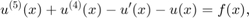
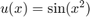
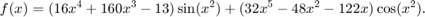
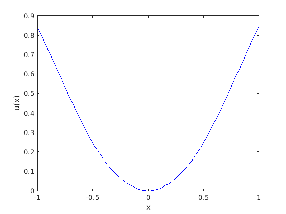
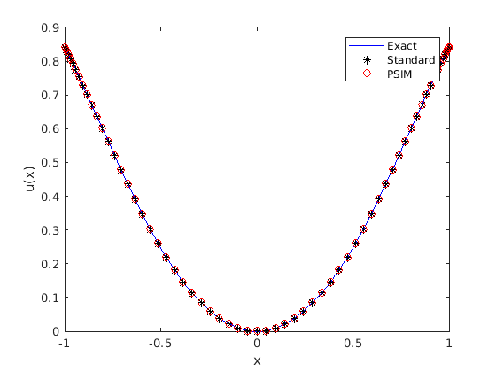

5th order constant coefficient example
Let's compare standard collocation with preconditioned collocation. We take a fifth order example with constant coefficients,

with . The right hand side function for this problem is

m = 5; N = 64; [Dm,x] = chebdifmat(N,m,1); Uexact = sin(x.^2); f = @(x) (16*x.^4 + 160*x.^3 - 13).*sin(x.^2) +... (32*x.^5 - 48*x.^2 - 122*x).*cos(x.^2); plot(x,Uexact,'b') xlabel('x') ylabel('u(x)')
Next we need to add boundary conditions to the problem. We'll use Dirichlet and Neumann at both 1 and -1, as well as a condition on the second derivative at 1.
BC = [ Uexact(1) ; 2*cos(1) ; 2*cos(1)-4*sin(1) ; Uexact(end) ; -2*cos(-1) ];
The first three conditions are at x=1, while the last two are at x=-1. We store this information in two rectangular matrices, for use with the PSIM later.
U1 = eye(3,5); U2 = eye(2,5);
Now it's time to decide on the row removal. Which rows will we take off to replace with boundary conditions? This choice is necessary to construct a square PSIM. We'll choose the rows symmetrically: the first and last two rows, as well as the middle row.
v = [1 2 N/2+1 N N+1];
We're now ready to construct the operators. We start with the differential operator.
I = eye(N+1); A = Dm(:,:,5) + Dm(:,:,4) - Dm(:,:,1) - I;
Replace those rows chosen for removal with boundary conditions.
A(v,:) = [ I(1,:) ; Dm(1,:,1) ; Dm(1,:,2) ; I(end,:) ; Dm(end,:,1) ];
Now build the right hand side, replacing those elements associated with the removed rows with the boundary condition values.
F = f(x); F(v) = BC;
Lastly, we construct the pieces needed to use the PSIM. There is the portion of the linear operator that is not inverted by the PSIM.
Atail = Dm(:,:,4) - Dm(:,:,1) - I; Atail(v,:) = 0;
Then there is the PSIM itself.
B = PSIM(N,m,v,U1,U2);
And now we solve the systems and present the results.
UA = A \ F; UB = (I + B*Atail) \ B*F; plot(x,Uexact,'b',x,UA,'k*',x,UB,'ro') xlabel('x') ylabel('u(x)') legend('Exact','Standard','PSIM')